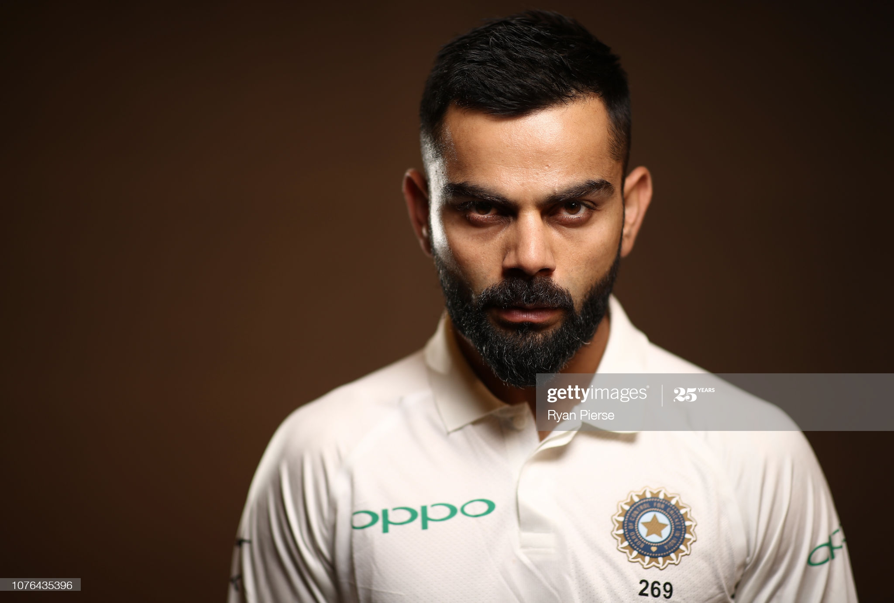

Virat Kohli

Wikipedia says:
Virat Kohli (born on 5 November 1988) is an Indian cricketer and the current captain of the India national team. A right-handed top-order batsman, Kohli is regarded as one of the best batsmen in the world.Since October 2017, he has been the top-ranked ODI batsman in the world and is currently 2nd in Test rankings with 886 points.Kohli has the best ever Test rating (937 points), ODI rating (911 points) and T20I rating (897 points).
Kohli made his ODI debut for India against Sri Lanka at the age of 19. Initially having played as a reserve batsman in the Indian team, he soon established himself as a regular in the ODI middle-order and was part of the squad that won the 2011 World Cup. He made his Test debut in 2011 and shrugged off the tag of "ODI specialist" by 2013 with Test hundreds in Australia and South Africa. Having reached the number one spot in the ICC rankings for ODI batsmen for the first time in 2013.